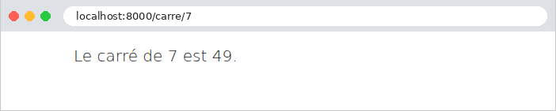
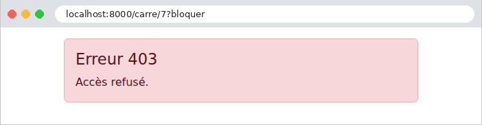
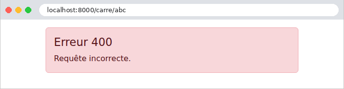
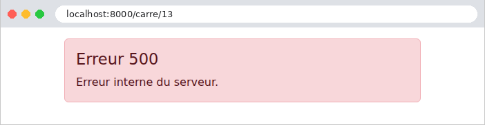

7. Le cycle de vie d'une requête
Entre l'arrivée d'une requête et le départ de sa réponse, le noyau de [Symfony] (la classe [HttpKernel]) enchaîne plusieurs étapes, et, à chacune d'elles, il publie un événement auquel l'application peut réagir par un écouteur. Nous en avons déjà rencontré plusieurs : les écouteurs de [kernel.request] et [kernel.response] (exemples 03, 16, 22), de [kernel.exception] (exemples 08 et 12), les résolveurs d'arguments (exemple 12). Ce chapitre les réunit dans un seul exemple, qui affiche dans la console un message à chaque étape, pour en observer l'ordre :
- 1 et 2. *[kernel.request] : la requête vient d'arriver. Tous les écouteurs de cet événement sont appelés, par priorité décroissante. L'un d'eux est le *routage de [Symfony] (l'écouteur [RouterListener], de priorité 32) : il cherche la route qui correspond à l'URL et à la méthode, et range son nom et ses paramètres dans les attributs de la requête ; si aucune ne correspond, il lève une exception [NotFoundHttpException] (404). Un écouteur de priorité supérieure à 32 (1) s'exécute avant le routage, et ne connaît pas la route ; un écouteur de priorité inférieure (2) la connaît. Un écouteur de [kernel.request] peut aussi fournir lui-même la réponse ([$evenement->setResponse(...)]) : l'action n'est alors pas appelée ;
- 3. *[kernel.controller]* : l'action a été choisie, mais pas encore appelée. Un écouteur peut examiner l'action (ses attributs [PHP], par exemple), ou la remplacer ;
- 4. Les résolveurs d'arguments calculent les paramètres de l'action (exemple 12), puis l'événement [kernel.controller_arguments] est publié ;
- 5. L'action, et la vue qu'elle fait fabriquer. (Si l'action ne rend pas un objet [Response], un événement de plus, [kernel.view], permet à un écouteur de fabriquer la réponse à partir de ce qu'elle a rendu.) ;
- 6 et 7. *[kernel.response]*** : la réponse est prête. Chaque écouteur peut la modifier (ajouter un entête, un cookie), par priorité décroissante ;
- 8. *[kernel.terminate], publié *après l'envoi de la réponse au navigateur (c'est l'appel [$noyau->terminate(...)] du fichier [public/index.php], exemple 01). Les écouteurs ne peuvent plus changer la réponse : ils servent aux traitements qui peuvent attendre (écrire un journal, envoyer un courriel...), sans faire patienter l'utilisateur ;
- x. *[kernel.exception] : une exception levée à n'importe quelle étape (par un écouteur, un résolveur, l'action ou la vue) interrompt le traitement ; elle est confiée aux écouteurs de cet événement. Le premier qui fournit une réponse arrête la recherche. Cette réponse passe ensuite par [kernel.response]*, comme une réponse ordinaire. Si aucun écouteur de l'application n'en fournit, c'est [Symfony] qui fabrique la page d'erreur : détaillée en mode debug, sobre sinon.
C'est l'équivalent des filtres de [Java] et des intercepteurs de [Spring MVC], des filtres d'action d'[ASP.NET Core MVC], des fonctions [before_request] / [after_request] de [Flask], et des middlewares de [Laravel]. La différence avec ces derniers est de structure : un middleware enveloppe la suite du traitement (il appelle [$next], et voit donc la requête avant et la réponse après, dans le même code), alors qu'un écouteur réagit à un événement ; pour agir avant et après l'action, il faut écouter deux événements. En contrepartie, un écouteur peut intervenir à une étape précise (après le routage, après le choix de l'action...), et l'ordre des écouteurs est donné par un nombre, la priorité.
7.1. Exemple 24 : les étapes du traitement d'une requête
L'application n'a qu'une action, qui calcule le carré d'un entier : [/carre/7]. Selon l'URL, elle réussit, ou elle échoue de différentes façons. Les messages sont écrits dans la console du serveur par la fonction [error_log] de [PHP], que le serveur de développement ([php -S]) affiche.
7.1.1. Avant et après tout le reste : src/EventListener/Journal.php
Une même classe peut écouter plusieurs événements : l'attribut [#[AsEventListener]] se place alors sur chacune des méthodes concernées.
- lignes 16-23 : le message n° 1, avec la requête ([getRequestUri()] : le chemin et les paramètres). La priorité 100 place l'écouteur avant le routage : rien ne s'est encore passé dans [Symfony] ;
- lignes 26-30 : le message n° 7, quand tout le reste a été fait. La priorité -100 place l'écouteur après ceux de l'application et de [Symfony] (qui, pour la plupart, ont une priorité comprise entre -10 et 10). [getStatusCode()] est le code de la réponse.
Un tel écouteur ne connaît pas la route choisie, puisque le routage n'a pas encore eu lieu. On l'utilise pour des traitements qui concernent toutes les requêtes : journalisation, prise en compte d'un proxy (l'étude de cas en parle, à propos de l'adresse IP des clients)...
7.1.2. Après le routage : src/EventListener/Bloquer.php
- ligne 13 : la priorité par défaut, 0 : l'écouteur est appelé après le routage ;
- ligne 20 : message n° 2. Le routage a rangé le nom de la route choisie dans l'attribut [_route] de la requête (et ses paramètres dans les attributs de même nom, exemple 12) ;
- lignes 21-24 : le paramètre [?bloquer] de l'URL ([has] teste sa présence) provoque une erreur 403 (Forbidden, accès refusé) : l'exception [AccessDeniedHttpException] interrompt le traitement.
7.1.3. Avant l'action : src/EventListener/Chronometre.php et Chrono.php
Nous voulons chronométrer certaines actions seulement, celles qui le demandent. Il suffit de les marquer d'un attribut [PHP] de notre invention :
Un attribut est une classe ordinaire, elle-même marquée de l'attribut [#[Attribute]] ; [Attribute::TARGET_METHOD] indique qu'il se place sur une méthode. Celui-ci ne porte aucune information : sa seule présence compte.
- lignes 17-28 : l'événement [kernel.controller]. La méthode [getAttributes] de l'événement rend les attributs [PHP] d'une classe donnée portés par l'action (et par sa classe) : une liste vide signifie que l'action n'est pas marquée, et l'écouteur ne fait rien. Sinon, message n° 3, et l'heure de départ, rangée dans les attributs de la requête (exemple 12). [hrtime(true)] est une horloge précise, en nanosecondes, faite pour mesurer des durées ;
- lignes 30-36 : message n° 6, sur [kernel.response], avec le code de la réponse, si la mesure a commencé. La priorité par défaut, 0, place cet écouteur avant celui du [Journal] (-100) ;
- lignes 40-49 : l'événement [kernel.terminate], publié après l'envoi de la réponse : message n° 8, avec la durée écoulée depuis le message n° 3. Le test de la ligne 45 vérifie que la mesure a commencé : l'événement est publié pour toutes les requêtes, même celles qui n'ont pas atteint l'action.
C'est ainsi que [Symfony] lui-même réalise certains de ses attributs : [#[IsGranted]], que nous verrons au chapitre suivant, est lu par un écouteur de [kernel.controller_arguments], qui refuse l'accès à l'action si l'utilisateur n'a pas le droit demandé.
7.1.4. Les arguments de l'action : src/Liaison/EntierResolver.php et le contrôleur
Un résolveur d'argument (exemple 12), qui écrit le message n° 4. Il accepte n'importe quel texte, et le convertit en entier, ou en [null] s'il n'en est pas un ([filter_var] rend [false]) : contrairement à une contrainte [requirements] (exemple 02), qui rendrait une page 404 pour [/carre/abc], c'est ici l'action qui décidera.
- ligne 20 : l'action est marquée de notre attribut [#[Chronometre]] ;
- ligne 21 : le paramètre [$n] est fourni par notre résolveur (attribut [#[ValueResolver]], exemple 12) ;
- lignes 24-26 : un paramètre qui n'est pas un entier : erreur 400 (Bad Request, requête incorrecte), par l'exception [BadRequestHttpException] ;
- lignes 27-29 : le nombre 13 provoque une erreur « imprévue ». [DomainException] est une classe d'exception de la bibliothèque standard de [PHP] ;
- ligne 30 : le cas normal. La vue [calcul/resultat.html.twig] affiche simplement le résultat.
7.1.5. La gestion des erreurs : src/EventListener/PageErreur.php
- lignes 15-17 : l'écouteur de [kernel.exception], avec la priorité -10. [Symfony] installe deux écouteurs de cet événement : le premier, de priorité 0, écrit l'exception dans le journal ; le second, de priorité -128, fabrique la page d'erreur de [Symfony]. Le nôtre passe entre les deux : l'exception est journalisée, puis nous fournissons la page ;
- ligne 21 : l'écouteur n'est pas un contrôleur, et n'a pas la méthode [render] d'[AbstractController] : il reçoit le moteur [Twig] lui-même (la classe [Twig\Environment]), dont la méthode [render] rend la page fabriquée, sous forme de chaîne ;
- lignes 28-32 : toutes les erreurs HTTP : une URL sans route (404), une méthode refusée (405), les exceptions [AccessDeniedHttpException] (403) et [BadRequestHttpException] (400)... implémentent l'interface [HttpExceptionInterface], et portent leur code ([getStatusCode()]). Ce seul test remplace donc toutes les pages d'erreur de [Symfony] par la nôtre ;
- lignes 33-36 : une exception de la classe [DomainException] (ou de ses sous-classes, cf. exemple 08) : une erreur « imprévue », transformée en page d'erreur « maison », avec le code 500 (Internal Server Error). Le message de l'exception est affiché dans la console, mais pas dans la page : il peut contenir des détails internes, qui ne regardent pas l'utilisateur ;
- lignes 37-39 : les autres exceptions sont laissées à [Symfony] ;
- lignes 42-43 : [setResponse] fournit la réponse, qui remplace l'exception, et arrête la propagation de l'événement : les écouteurs suivants (la page d'erreur de [Symfony]) ne sont pas appelés.
La page d'erreur reçoit le code d'erreur, et affiche un message adapté :
- ligne 8 : un tableau associatif écrit dans la vue ([{clé: valeur, ...}]), dont on prend l'élément d'indice [code] ; l'opérateur [??] fournit une valeur par défaut quand cet élément n'existe pas.
Il existe une autre façon, plus simple encore, de remplacer les pages d'erreur, sans écrire d'écouteur : une vue [templates/bundles/TwigBundle/Exception/error404.html.twig] remplace la page de l'erreur 404, et de même pour chaque code ([error.html.twig] pour tous les autres). Ces vues ne servent qu'en production, le mode debug gardant ses pages détaillées (on peut les prévisualiser en mode debug à l'adresse [/_error/404], si l'on a importé les routes [@FrameworkBundle/Resources/config/routing/errors.php]). Un écouteur, lui, permet un traitement quelconque (une réponse JSON, une redirection...), dans tous les modes.
7.1.6. Exécution
Le cas normal, [/carre/7] :

La console du serveur montre les huit étapes, dans l'ordre (les dates que [php -S] place en tête des lignes ont été retirées) :
La ligne [[info]] vient du routage de [Symfony] : c'est son journal (log). Sans bibliothèque de journalisation (la plus utilisée est [Monolog], installée par [composer require logger]), [Symfony] utilise un journal minimal, qui écrit dans la console. La dernière ligne est le journal du serveur de développement, écrit une fois la requête terminée. Un accès bloqué, [/carre/7?bloquer] :

L'écouteur [Bloquer] a levé une exception : l'action n'a pas été choisie, ni ses arguments calculés, ni elle-même appelée. L'exception a été journalisée par [Symfony], puis transformée en réponse par notre écouteur ; cette réponse est passée par [kernel.response]. L'événement [kernel.terminate] a été publié, mais [Chrono] n'a rien affiché, la mesure n'ayant pas commencé. Un paramètre qui n'est pas un entier, [/carre/abc] :

Cette fois, l'action a été appelée, avec [null] (qui s'écrit comme une chaîne vide : [carre()]), et c'est elle qui a levé l'erreur 400. Une erreur « imprévue », [/carre/13] :

L'exception a été traitée par notre écouteur : l'utilisateur voit la page d'erreur « maison », et non la page détaillée, bien que le mode debug soit actif. Elle a tout de même été écrite dans le journal, avec le niveau [critical] (une erreur HTTP n'est qu'une [error]) : comme [Laravel], [Symfony] distingue l'enregistrement d'une exception dans le journal de la réponse qu'elle produit. Enfin, une URL qui ne correspond à aucune route, [/inconnu] :
Le routage a échoué : aucun écouteur après lui, aucune action. La page 404 est la nôtre :
Retenons l'essentiel. Les écouteurs des événements du noyau sont le bon endroit pour les vérifications communes à de nombreuses actions (l'utilisateur est-il connecté ? a-t-il le droit d'accéder à cette action ?) : c'est sur eux que repose le composant de sécurité de [Symfony], que le chapitre suivant utilise pour l'authentification. Les écouteurs de [kernel.exception] et les vues d'erreur garantissent que l'utilisateur ne voit jamais une page technique, quelle que soit l'erreur : l'étude de cas en tire parti.